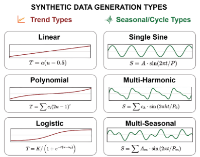
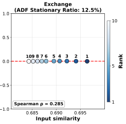
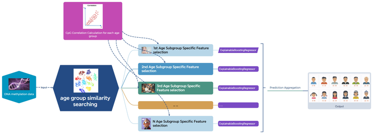
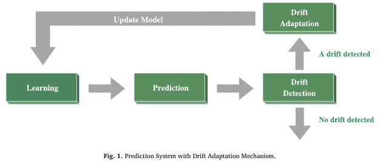

Publication
Publications and first-author oral presentations. * denotes corresponding authorship.
2026
-

Time-Series Decomposition as a Standalone Task: A Mechanism-Driven Diagnostic Benchmark.
Zipeng Wu, Jiani Wei, Shiqiao Zhou, Jiajun Chen, Fabian Spill, and J. W. Andrews*. Forty-third International Conference on Machine Learning. First author.
-

Stationarity-Aware Retrieval-Augmented Time Series Forecasting.
Shiqiao Zhou, Holger Schoner, Zipeng Wu, Edouard Fouche, IAG Wilson, and Shuo Wang*. 32nd SIGKDD Conference on Knowledge Discovery and Data Mining. Co-author.
2024
-

iTARGET: Interpretable Tailored Age Regression for Grouped Epigenetic Traits.
Zipeng Wu, Daniel Herring, Fabian Spill, James Andrews. IEEE International Conference on Bioinformatics and Biomedicine, pp. 647-652. First author.
2023
-

A novel online multi-task learning for COVID-19 multi-output spatio-temporal prediction.
Zipeng Wu, Chu Kiong Loo, Unaizah Obaidellah, Kitsuchart Pasupa. Heliyon, 9(8), e18771. First author.
-
Correlated Online k-Nearest Neighbors Regressor Chain for Online Multi-output Regression.
Zipeng Wu, Chu Kiong Loo, Kitsuchart Pasupa. International Conference on Neural Information Processing, LNCS 14449, pp. 28-39. First author; oral presentation.
2022
-
An Interpretable Multi-target Regression Method for Hierarchical Load Forecasting.
Zipeng Wu, Chu Kiong Loo, Kitsuchart Pasupa, Licheng Xu. International Conference on Neural Information Processing, CCIS 1794, pp. 3-12. First author; oral presentation.
2020
-
A Novel Dynamically Adjusted Regressor Chain for Taxi Demand Prediction.
Zipeng Wu, Guan Lian. International Joint Conference on Neural Networks. First author; oral presentation.